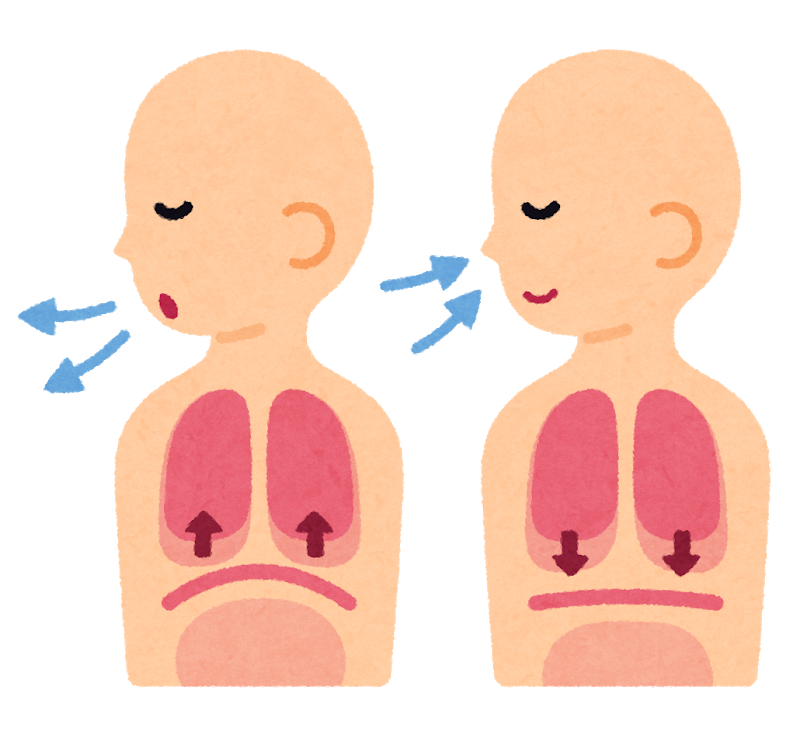

2020.3.24
パニック発作や過呼吸は、「呼吸法」で必ず治すことができます。

パニック発作や過呼吸は「呼吸法」で治る。
そんなことを書くと、
「そんな簡単なことで発作や過呼吸を抑えられるなら、誰も苦しんでない。」
「呼吸法ってなんかウソくさい・・・」
そんな風に思った方もいるかもしれません。
ですが、必ず呼吸法で治すことができる根拠があるので、それを話していきます。
呼吸法で、発作・過呼吸が抑えられるメカニズム
理由は簡単です。
呼吸法により、呼吸を自分でコントロールすることで、脈拍数を抑え、副交感神経を 優位にすることができるからです。
呼吸は、唯一、自分自身でコントロールすることができます。
人がリラックスしているときの脈拍数は、大体１分あたり５０〜７０と 言われています。
脈拍数がそのくらいの場合、副交感神経が優位になっているため、反比例して、 発作や過呼吸が起こるということはありえないのです。